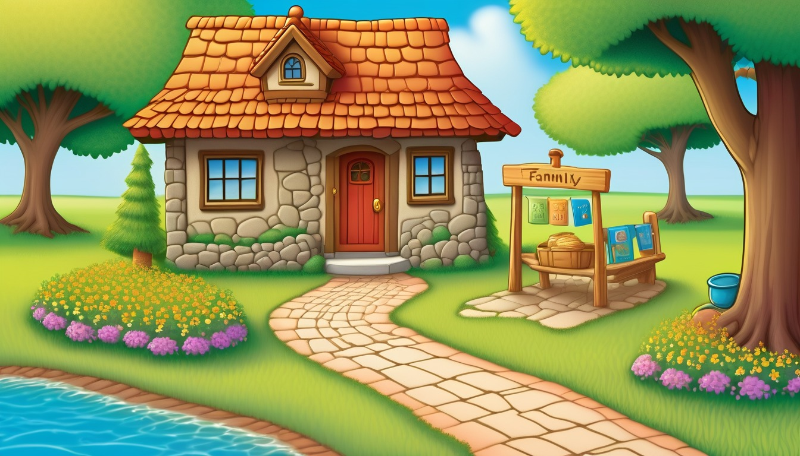
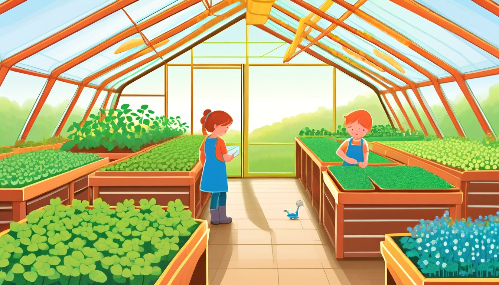
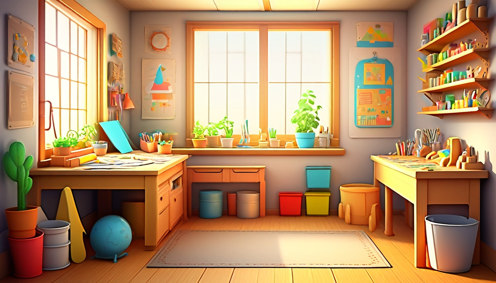

Fifteen cooperative table cards for screen-free story rounds, quiet choices, and take-home starters.
Audience: Families, homeschool co-ops, library family nights, and classroom celebration tables for ages 7-11.
Format: 15 printable cooperative story cards plus host guide tools
No scary harm, no bullying, no romance, no weapons, no branded characters, no real child profiles.
$27
Included
15 cooperative story card pages
Host table setup guide
Round hosting notes
Quiet participation options
No-data use notes
Family handoff notes
Pack reset notes
Six cooperative round formats
Ten take-home story starters
Eight optional family-share prompts
Local image-backed world menu
Provider-ready PDF and ZIP artifact
Host guide
Start the story round
Table setup
Print one host copy, one active card stack, and a small take-home starter stack before the family table opens.
Place pencils, blank half-sheets, and one face-down card pile within adult reach so cards enter the table one at a time.
Keep extra cards in a host folder until the group finishes the current story step.
Set a quiet spot at the same table with paper, pencil, and a choice strip for anyone who wants a private start.
Use plain folders, color tabs, or table symbols for simple sorting when pages need to travel home.
Choose one adult sample place, one ordinary object, and one small friendly mix-up before the first card is read.
Round hosting
Open each round by reading one card aloud and naming the first writing blank before anyone adds ideas.
Model one invented answer, then invite short written, sketched, pointed, or spoken choices.
Move in small steps: place, helper, object, mix-up, next action, and calm ending.
Keep the active card visible and leave the rest of the stack covered until the current page has one finished line.
Invite optional family sharing after writing, with the choice to share a title, object, sketch, or one sentence.
When the table gets busy, pause on the current blank and offer two simple invented choices.
Quiet participation
Let anyone join by pointing to a printed choice, circling an option, sketching a clue, or writing one private line.
Offer a silent card path where the writer fills only the place blank and the object blank.
Allow a grown-up to write a dictated phrase while the writer chooses the words.
Make sharing optional and accept a shown sketch, underlined word, or folded page as complete participation.
Use short check-ins such as choose one object or mark one ending instead of calling on anyone unexpectedly.
Keep a spare blank card nearby for a fresh start when the current card feels too crowded.
No-data use
Use invented places, invented helpers, and ordinary objects; personal facts are not needed.
Keep every card printable, offline, and handled by the host, family, or participant.
This deck does not require personal lists, recordings, location details, contact details, or private identifiers.
Use color tabs, table symbols, or plain folders for organization instead of personal labels.
Keep all finished pages at the table or send them home with the family.
Family handoff
Send home the finished card page plus one optional take-home story starter.
Mark one simple follow-up such as add a title, add one clearer detail, or finish the ending.
Tell families the starter can be completed by pointing, sketching, dictating, or writing one short line.
Keep home sharing optional and focused on the printed page, invented place, object clue, or title.
Invite families to save unfinished cards for another calm table moment.
Pack reset
Collect unused cards first and return them to the host folder before clearing pencils and paper.
Place finished pages in plain take-home folders or let families carry their own pages.
Stack the played cards behind the host copy so the next table can begin with a fresh face-down pile.
Replace bent choice slips, sharpen pencils, and refill blank half-sheets before storing the deck.
Note which card format worked best on a small host note without recording personal details.
Use one card at a time. Keep every detail invented, printable, and offline.
World menu
Image-backed story card menu
Pick one card at a time. Each card uses an invented world image so family-table details become fiction without personal data or online sharing.
Ages 7-8
Teacup Town Weather Window
Ages 7-9
Spoon Ferry Lunchbox Harbor
Ages 7-9
Pocket Park Notice Board
Ages 7-9
Button Bakery Map Mix-Up

Ages 7-9
Penny Path Compass Shop
Ages 8-10
Tidepool Timekeepers Lab

Ages 8-10
Greenhouse Gear Garden
Ages 8-10
Pantry Measurement Mystery
Ages 8-10
Rain Gauge Railway
Ages 8-10
Seed Library Map Room
Ages 10-11
Revision River Ferry
Ages 10-11
Clue Label Tower Museum
Ages 10-11
Compass Craft Academy

Ages 10-11
Almost Invention Workshop
Ages 10-11
Index Card Theater Club
Round tools
Cooperative round formats and optional family-share prompts
One-Card Story Seed
Best for: A calm first table round where the host wants one shared card and quick individual story starts.
Host reads one card aloud and points to the place blank.
Each participant chooses an invented place, ordinary object, or helper by writing, sketching, or pointing.
Host offers one sample sentence using different invented details.
Writers add two short lines to their own page and mark one idea to keep.
Pass the Object Clue
Best for: Family tables that like shared ideas while each writer still keeps a private page.
Host places one ordinary object choice in the center and reads the active card prompt.
Each participant adds one possible use for the object on a scrap or shared host page.
Host repeats the gathered ideas using only invented details.
Writers choose one idea and turn it into a story clue on their own card page.
Quiet Sketch Start
Best for: Mixed-energy groups, shy writers, and tables that need a low-noise opening.
Host gives everyone the same card and asks for a silent sketch in the first blank.
Participants label the sketch with one place word, object word, or action word.
Host reads two optional next-step choices for anyone who wants support.
Writers turn the sketch and label into one clear opening sentence.
Four-Blank Family Tale
Best for: A longer table round with a clear beginning, middle, and ending path.
Host chooses a card with blanks for place, helper, object, and ending.
Participants fill one blank at a time while the host keeps the next blank covered.
Host pauses after the object blank and asks everyone to choose one next action.
Writers finish the ending blank and underline the strongest story detail.
Title Last Round
Best for: A closing round when families want a finished page without a long draft.
Host reads a short card and asks writers to complete only the setting and object blanks.
Participants add one ending line that makes the small mix-up settle kindly.
Host invites each writer to write three title choices privately.
Writers circle one title and place the page in a take-home folder.
Table Talk to Tiny Draft
Best for: Homeschool co-op nights, library family events, or classroom celebration tables with adult guidance.
Host reads one card and asks for optional table talk about invented places or ordinary objects.
Participants choose two table ideas and write them in their own blanks.
Host models how the two ideas can become first and next.
Writers draft three lines and choose whether to share a title, sketch, or object clue.
Optional share prompts
Show one title or sketch from the card page: ____________________.
Read one sentence aloud, or ask a grown-up to read it: ____________________.
Point to one object clue and say how it helps the story: ____________________.
Share one invented place detail from the table round: ____________________.
Tell which part came first, next, or last: ____________________.
Show one word that became clearer after the round: ____________________.
Describe one calm ending choice from the invented story: ____________________.
Keep the page private today and mark one finished detail: ____________________.
Take-home tools
Take-home story starters
6 minutes | setting detail
Game Night Place
Invent one cozy story place from tonight's card: ____________________.
A grown-up can ask what the place looks, sounds, or feels like: ____________________.
7 minutes | plot clue
Object Clue Add-On
Choose one ordinary object from the table and make it a useful clue: ____________________.
A grown-up can offer two possible object uses here: ____________________.
6 minutes | action choice
Helper Next Action
Write what the invented helper does next after the small mix-up: ____________________.
A grown-up can ask which action makes the most sense: ____________________.
5 minutes | main idea
Three Tiny Titles
Write three possible titles for the card story: ____________________.
A grown-up can ask which title gives the clearest clue: ____________________.
8 minutes | sequence
First Next Last Card
Write first, next, and last for the card story path: ____________________.
A grown-up can point to the step that should become longer: ____________________.
5 minutes | revision
Clearer Word Swap
Pick one word from the card page and swap in a clearer word: ____________________.
A grown-up can ask which word became easier to picture: ____________________.
7 minutes | dialogue
Dialogue Pair
Write two short lines between an invented guide and an invented maker: ____________________.
A grown-up can read one role while the writer chooses the reply: ____________________.
8 minutes | ending choice
Kind Ending
Add a calm ending where the helper uses one object wisely: ____________________.
A grown-up can ask what changed by the end: ____________________.
6 minutes | visual planning
Sketch and Sentence
Sketch one card idea and write one sentence under it: ____________________.
A grown-up can ask which part of the sketch belongs in the story: ____________________.
7 minutes | story planning
Next Table Seed
Invent one place, one helper, one object, and one small mix-up for next time: ____________________.
A grown-up can add one extra detail to the seed: ____________________.
Story card 1 | Ages 7-8
Teacup Weather Window Helper
Teacup Town Weather Window
Choose a teacup weather clue, pick the helper at the window, and write what the helper notices first.
Ask the table which tiny weather clue is easiest to picture, then invite each writer to choose a helpful character.
setting detail and character choice15-minute cooperative, screen-free printable family-table card for younger writers who can add one tiny setting clue and one helper choice.
Adult setup: Print one card per writer, place pencils in the middle, and model one short setting detail before the table writes.
Window Weather
The teacup window shows weather shaped like ____________________.
The tiny room smells like ____________________ when the weather changes.
The sill holds a small clue: ____________________.
Helper Choice
The helper at the window is ____________________.
The helper carries ____________________.
The helper decides to check ____________________ first.
Story Start
First, the weather clue moves toward ____________________.
Next, the helper says, "I notice ____________________."
The table story starts when ____________________.
Table talk: One setting detail I can add for the family table is ____________________.
Tiny draft: The helper looks through the window and sees ____________________.
Round wrap: The detail that made our teacup scene clearer was ____________________.
Quiet option: Point to a favorite line, then write one more window clue: ____________________.
Take-home story: At home, add a new weather clue that changes ____________________.
Story card 2 | Ages 7-9
Spoon Ferry Harbor Cargo Note
Spoon Ferry Lunchbox Harbor
Send the spoon ferry across the lunchbox harbor, choose its cargo, and write three calm story steps.
Ask writers to name one harbor detail they can hear, see, or feel before they write the ferry note.
sequence and sensory detail16-minute cooperative, screen-free printable family-table card for writing a clear ferry sequence with one sound, color, or texture.
Adult setup: Print the card, set out pencils, and place a simple paper harbor path in the middle for writers to point at while planning.
Harbor Setting
The spoon ferry waits beside ____________________.
The lunchbox harbor sound is ____________________.
The dock color I picture is ____________________.
Cargo Choice
The ferry carries ____________________.
The harbor helper checks ____________________.
The careful paper route goes around ____________________.
Three-Step Note
First, the ferry glides past ____________________.
Next, the cargo helper notices ____________________.
Last, the dock note says ____________________.
Table talk: The sensory detail I can offer the table is ____________________.
Tiny draft: The spoon ferry carries ____________________ across the harbor.
Round wrap: The step that helped our ferry story move forward was ____________________.
Quiet option: Trace the ferry path silently, then write one cargo clue: ____________________.
Take-home story: At home, add one more harbor sound or color: ____________________.
Story card 3 | Ages 7-9
Pocket Park Notice Board Helper
Pocket Park Notice Board
Create a pocket park notice, choose the helper who reads it, and write what the helper says.
Ask the table what kind of small park job a helper could do, then invite one short spoken sentence.
dialogue and character choice15-minute cooperative, screen-free printable family-table card for inventing one useful notice and one friendly spoken line.
Adult setup: Print the card, offer pencils and blank paper strips, and remind writers that every notice is invented for the story world.
Notice Board
The pocket park notice asks for ____________________.
The notice is posted beside ____________________.
The board has a small drawing of ____________________.
Park Helper
The helper who reads the notice is ____________________.
The helper brings ____________________.
The helper chooses this job because ____________________.
Spoken Line
The helper says, "I can help with ____________________."
The next kind reply is ____________________.
The notice board changes when ____________________.
Table talk: A helpful notice idea for our park is ____________________.
Tiny draft: The pocket park helper says, "____________________."
Round wrap: The spoken line that made our park helper clearer was ____________________.
Quiet option: Skip reading aloud and copy one notice line here: ____________________.
Take-home story: At home, add one new pocket park notice about ____________________.
Story card 4 | Ages 7-9
Button Bakery Map Fix
Button Bakery Map Mix-Up
Fix the bakery map by choosing one mixed-up clue, adding a direction word, and writing the clearer route.
Ask writers to point to one bakery object on the card and make the route more specific before the round wraps.
revision and clear directions17-minute cooperative, screen-free printable family-table card for replacing one vague map clue with a clearer bakery detail.
Adult setup: Print the card, set out pencils, and offer beside, past, near, and around as gentle direction words.
Bakery Map
The crumb path begins near ____________________.
The button baker looks past ____________________.
The mixed-up clue points toward ____________________.
Clearer Clue
I can replace a vague word with ____________________.
The better direction word is ____________________.
The bakery detail that helps readers is ____________________.
Fixed Route
First, follow the crumb path beside ____________________.
Next, turn around ____________________.
The fixed map ends at ____________________.
Table talk: The clearer direction I can add is ____________________.
Tiny draft: The button baker fixes the map by changing ____________________.
Round wrap: The revision that made our route easier to follow was ____________________.
Quiet option: Draw one arrow first, then write the clearer clue: ____________________.
Take-home story: At home, revise one bakery map clue into ____________________.
Story card 5 | Ages 7-9
Penny Path Compass Shop Ending
Penny Path Compass Shop
Follow the penny compass, choose where the route ends, and write what the shop helper says there.
Ask the table which ending feels complete, then have each writer add one short shop-helper sentence.
ending choice and dialogue16-minute cooperative, screen-free printable family-table card for choosing a gentle ending and adding one compass-shop line of dialogue.
Adult setup: Print the card, place pencils nearby, and invite writers to choose a calm ending that finishes the route on paper.
Compass Setting
The penny compass points toward ____________________.
The shop shelf holds ____________________.
The path under the counter looks like ____________________.
Shop Helper
The compass shop helper carries ____________________.
The helper says, "This path leads to ____________________."
The helper pauses beside ____________________.
Ending Choice
The route could end with a discovered object: ____________________.
The route could end with a helpful note: ____________________.
I choose this ending because ____________________.
Table talk: The ending choice I can offer the family table is ____________________.
Tiny draft: At the compass shop, the helper says, "____________________."
Round wrap: The ending that made our Penny Path story feel complete was ____________________.
Quiet option: Choose the ending silently, then write one compass clue: ____________________.
Take-home story: At home, add one more ending detail about ____________________.
Story card 6 | Ages 8-10
Tidepool Timekeepers Lab Setting Card
Tidepool Timekeepers Lab
Choose the timekeeper's job, collect three setting clues, and write the first small moment of the story.
Ask for one sight, one sound, and one texture, then let the writer choose which details belong on the page.
Setting detail and sensory observationAges 8-10 cooperative family-table round where the group builds one calm tidepool lab scene.
Adult setup: Print the card, place one pencil in the center, and invite the table to offer tiny tidepool details aloud.
Lab Setting
The tidepool lab is tucked beside ____________________.
The clearest sound in the lab is ____________________.
One texture the timekeeper touches is ____________________.
Timekeeper Choice
The timekeeper decides to check ____________________.
The tiny tool on the table is ____________________.
The choice matters because ____________________.
Opening Moment
First, the tidepool clock shows ____________________.
Next, the lab helper notices ____________________.
The scene begins when ____________________.
One tidepool detail our table agrees to use is ____________________.
My first sentence begins with ____________________.
The round wraps up with the timekeeper choosing ____________________.
If I want a quiet turn, I can circle the detail ____________________.
At home, the tidepool lab can open again when ____________________.
Story card 7 | Ages 8-10
Greenhouse Gear Garden Character Card
Greenhouse Gear Garden
Pick a gear-garden helper, give the helper a clear choice, and write one line of dialogue.
Invite short suggestions for what the helper sees, wants, and says in a friendly greenhouse moment.
Character choice and dialogueAges 8-10 cooperative family-table card for choosing one garden helper and one shared speaking line.
Adult setup: Print the card, set out pencils, and ask the table to name gentle greenhouse jobs before writing starts.
Garden Helper
The greenhouse helper carries ____________________.
The helper cares most about ____________________.
One gear in the garden moves near ____________________.
Choice Point
The helper can turn toward ____________________.
The helper can pause beside ____________________.
The kinder choice is to ____________________.
Speaking Line
The helper says, "I notice ____________________."
Another table idea for dialogue is ____________________.
The line shows the helper feels ____________________.
One greenhouse job we can picture together is ____________________.
My dialogue sentence will say, "____________________."
The round wraps up after the helper decides to ____________________.
If I want a quiet turn, I can write the helper's object as ____________________.
At home, the gear garden grows a new scene around ____________________.
Story card 8 | Ages 8-10
Pantry Measurement Mystery Sequence Card
Pantry Measurement Mystery
Order the pantry clues, add one exact measurement detail, and draft the next step in the scene.
Ask what should happen first, what changes next, and which small measurement detail makes the scene clearer.
Sequence and exact measurement detailAges 8-10 cooperative family-table card for ordering three pantry clues into one short scene.
Adult setup: Print the card and invite the table to choose three harmless pantry objects as pretend story clues.
Pantry Clues
The first pantry clue sits beside ____________________.
The second clue measures ____________________.
The third clue points toward ____________________.
Clear Order
First, the shelf helper checks ____________________.
Next, the measuring cup shows ____________________.
After that, the helper moves toward ____________________.
Next Step Draft
The scene continues when ____________________.
The exact amount I will include is ____________________.
The next helpful action is ____________________.
One pantry clue our table can place in order is ____________________.
My sequence sentence starts with ____________________.
The round wraps up when the pantry helper reaches ____________________.
If I want a quiet turn, I can number the clue ____________________.
At home, the pantry scene can continue with ____________________.
Story card 9 | Ages 8-10
Rain Gauge Railway Sensory Route Card
Rain Gauge Railway
Choose the railway route, add two sensory details, and decide where the ending should stop.
Ask what the gauge shows, what the railway feels like, and which stop gives the story a satisfying ending.
Sensory detail, sequence, and ending choiceAges 8-10 cooperative family-table round where the group builds one weather route together.
Adult setup: Print the card, invite one gentle weather detail from the table, and keep the route short.
Gauge Reading
The rain gauge shows ____________________.
The air around the platform smells like ____________________.
The railway track shines near ____________________.
Route Sequence
First, the conductor checks ____________________.
Then, the route bends toward ____________________.
Before the last stop, the rider notices ____________________.
Ending Choice
The story can end at ____________________.
The ending feels complete because ____________________.
One final detail to add is ____________________.
One railway sound our table can use is ____________________.
My route sentence includes the detail ____________________.
The round wraps up at the railway stop called ____________________.
If I want a quiet turn, I can choose the ending place ____________________.
At home, the rain gauge route can continue toward ____________________.
Story card 10 | Ages 8-10
Seed Library Map Room Revision Card
Seed Library Map Room
Pick a seed map, write a short route, revise one vague word, and choose the ending doorway.
Ask which noun should be more exact, which route detail should move earlier, and where the story should end.
Map detail, revision, and ending choiceAges 8-10 cooperative family-table card for revising one map scene with clearer details.
Adult setup: Print the card, ask the table for one map-room object, and remind writers they can improve one sentence.
Map Room Detail
The seed map is spread across ____________________.
The clearest label on the map says ____________________.
The map room smells like ____________________.
Revision Spot
A vague word I can replace is ____________________.
A stronger noun for the sentence is ____________________.
The revised detail helps readers picture ____________________.
Ending Doorway
The route leads to ____________________.
The final seed packet shows ____________________.
The ending line should leave the reader with ____________________.
One map-room detail our table wants to keep is ____________________.
My revised sentence will change ____________________ to ____________________.
The round wraps up when the seed map points to ____________________.
If I want a quiet turn, I can underline the word ____________________.
At home, the seed library story can end near ____________________.
Story card 11 | Ages 10-11
Revision River Ferry Ending Switch
Revision River Ferry
Draft a river scene, revise one sentence, and choose an ending that echoes an earlier clue.
Ask which detail should return at the dock and which extra sentence can be trimmed.
Revise a shared table idea by choosing the clearest ending detail.Upper-age cooperative family-table card for a calm paper-and-pencil story round.
Adult setup: Set one printed card near the pencils and ask the table to choose one ferry detail everyone may borrow.
Ferry Start
The ferry carries a small object shaped like ____________________.
The river setting feels ____________________ because of one detail.
The table clue everyone may borrow is ____________________.
Revision Turn
My first ending idea is ____________________.
One sentence I can make clearer is ____________________.
The detail that should return near the dock is ____________________.
Dock Ending
The ferry reaches the dock when ____________________.
My revised final image is ____________________.
The ending choice I like best is ____________________.
Tell the table one detail you kept after revising: ____________________.
Tiny draft: The ferry changed course when ____________________.
This round made my ending clearer by ____________________.
Quiet option: circle one sentence to revise and copy it here: ____________________.
Take-home story starter: A ferry ticket with a revised note says ____________________.
Story card 12 | Ages 10-11
Clue Label Tower Sensory Case
Clue Label Tower Museum
Choose one clue, add a sensory detail, and write a label that points a reader into the scene.
Ask which clue belongs in the first sentence and which detail is only background.
Select precise setting details and turn them into a concise story label.Upper-age cooperative family-table card for screen-free observation, sorting, and short writing.
Adult setup: Place the card in the center and invite the table to name one quiet museum case, shelf, or tower detail.
Case Clues
The tower case holds something that looks like ____________________.
A sound, texture, or color near it is ____________________.
The clue the table can reuse is ____________________.
Label Focus
The label should help readers notice ____________________.
The detail I will leave in the background is ____________________.
The strongest setting word on my card is ____________________.
Museum Scene
My story label begins with ____________________.
The scene changes when someone notices ____________________.
The label makes the setting feel ____________________.
Share one setting word the table could borrow: ____________________.
Tiny draft: The tower label pointed toward ____________________.
This round helped me choose the clearest clue: ____________________.
Quiet option: write only your final invented label here: ____________________.
Take-home story starter: A label on an ordinary shelf explains ____________________.
Story card 13 | Ages 10-11
Compass Craft Academy Route Choice
Compass Craft Academy
Plan a three-stop route, choose what the main character decides, and draft the turning sentence.
Ask which stop changes the plan and which map word helps readers follow the sequence.
Build sequence with a clear route, character choice, and turning point.Upper-age cooperative family-table card for mapping a short scene with three connected steps.
Adult setup: Invite the table to agree on one starting place, one turn, and one finish before anyone writes.
Route Map
The route starts beside ____________________.
The middle stop reveals ____________________.
The finish point waits near ____________________.
Choice Point
The main character chooses to ____________________.
The reason for that choice is ____________________.
A compass word that shows the next step is ____________________.
Sequence Draft
First, the route moves through ____________________.
Next, the plan changes because ____________________.
Finally, the ending lands at ____________________.
Tell the table which stop changed the route: ____________________.
Tiny draft: The compass pointed next to ____________________.
This round made my sequence clearer by ____________________.
Quiet option: draw three route dots and write the middle turn: ____________________.
Take-home story starter: A hallway map at home leads from ____________________ to ____________________.
Story card 14 | Ages 10-11
Almost Invention Workshop Test Note
Almost Invention Workshop
Invent a nearly useful paper tool, write three ordered steps, and revise one test note.
Ask where the directions need a clearer verb, label, or sensory detail.
Use ordered steps, sensory detail, and revision to explain a paper invention.Upper-age cooperative family-table card for inventing a simple paper-only idea together.
Adult setup: Ask the table to pick one simple household problem for an imaginary paper tool to help explain.
Workshop Idea
The paper-only invention is called ____________________.
It is meant to help with ____________________.
The texture, color, or shape detail is ____________________.
Step Order
Step one tells the reader to ____________________.
Step two changes the tool by ____________________.
Step three checks whether ____________________.
Test Note
The part that almost works is ____________________.
The direction I should revise is ____________________.
The final test note says ____________________.
Share one verb that made the directions clearer: ____________________.
Tiny draft: The almost-invention worked better after ____________________.
This round helped me revise the step that says ____________________.
Quiet option: revise one direction silently and write it here: ____________________.
Take-home story starter: A paper tool on the kitchen table almost solves ____________________.
Story card 15 | Ages 10-11
Index Card Theater Dialogue Turn
Index Card Theater Club
Write two lines of dialogue, show what a character chooses, and end with a clear scene shift.
Ask what the first line expects and how the reply changes the scene direction.
Write concise dialogue that reveals character choice and ending direction.Upper-age cooperative family-table card for a short two-voice scene on printable cards.
Adult setup: Invite the table to choose one setting cue and one shared object before writers draft two spoken lines.
Stage Cards
The tiny theater setting is ____________________.
The shared object on the table is ____________________.
A quiet action before the dialogue is ____________________.
Dialogue Turn
The first spoken line is ____________________.
The reply changes the plan by ____________________.
The character choice behind the reply is ____________________.
Scene Shift
The scene turns when ____________________.
The final stage detail is ____________________.
The ending direction points toward ____________________.
Share the reply that changed your scene: ____________________.
Tiny draft: The second line changed everything because ____________________.
This round made my dialogue stronger by ____________________.
Quiet option: write only the two spoken lines here: ____________________.
Take-home story starter: Two index cards on a table begin a scene about ____________________.